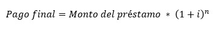

En el esquema de pago al final del período o esquema de pago único, como su nombre lo indica, únicamente se realiza un pago al finalizar el período establecido. En dicho pago se incluyen el monto de la deuda y los intereses generados.
Para calcular el monto del pago único se utiliza la siguiente fórmula:
 Donde:
Para saber el monto que se paga de intereses, simplemente restaremos el monto del préstamo al monto del pago final.